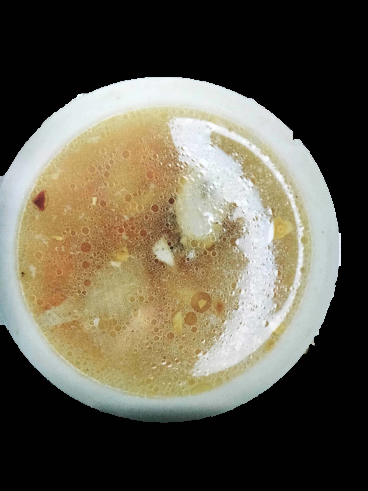

Home
Chicken Savory Soup

Description
A warm and comforting chicken savory soup made with tender chicken, fresh vegetables, and aromatic herbs simmered to perection. Perfect for chilly days or when you need a hearty, wholesome meal.
Ingredients
- 1 kl whole chicken
- 3 pcs garlic
- 1 pc onion
- 1 tbsp salt
- 11 g MSG
- 2 pcs carrots (chopped)
- water
Procedure
- Pour water into a casserole.
- Heat on a stove and wait for it to boil.
- Add the whole chicken, carrots, garlic, onion, and black pepper to boiling water.
- Let it simmer for 10 minutes.
- After 10 minutes, remove chicken and vegetables. Set aside.
- Shred chicken meat to small pieces.
- Add again the remaining ingredients and season with salt and MSG.
- Remove from fire and serve.